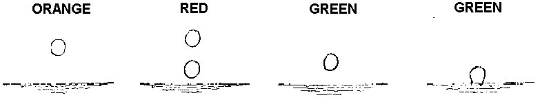
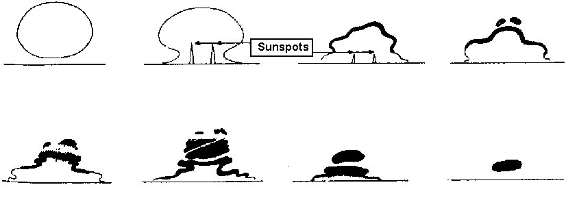

The diameter of the light beam from a given extraterrestrial source decreases with respect to an earth-bound observer, with increasing distance from the zenith, as illustrated in Fig. 14. Thus, when the zenith angle increases, the apparent diameter D of the light source decreases rapidly to a minimum value on the horizon. Hence, the chance of having a light source of diameter less than D is greatest on the horizon. Therefore, color separation is observed most frequently on the horizon, when the light source is reduced to a bright point like a star or a minute portion of the solar or lunar disc. A prominent example of the visible effects of color separation is the so-called Green Flash. This phenomenon is sometimes observed when the sun disappears in a clear sky below a distant horizon. The last star-like point can then be seen to change rapidly from pale yellow or orange, to green, and finally, blue, or at least a bluish-green. The vividness of the green, when the sky is exceptionally clear, together with its almost instant appearance and extremely short duration, has given rise to the name "green flash" for this phenomenon.
The same gamut of colors, only in reverse order, occasionally is seen at sunrise. The observations of the Green Flash require an unusually clear atmosphere such that the sun is yellowish, and not red, as it begins to sink below the horizon. A red setting sun means that the blue and green portions of the spectrum are relatively strongly attenuated by the atmosphere and hence indicates that conditions are not favorable for seeing the greenish segment. Thus, the meteorological conditions required for observing color separation are even more stringent than those required for observing optical mirages. Examples of color separation associated with astronomical refraction are given on the following page in excerpts from The Marine Observateur.
In terrestrial refraction the composing colors of white light are very seldom separated to the extent that the effects can be observed with the naked eye. When the wavelength dependence of the refractive index is put back into Eq. (4),
Hence, for a given temperature inversion, the refractive index (n) decreases somewhat faster with height (z) for Lambda = 0.4µ (blue) than for Lambda = 0.7µ (red), so that the blue rays are refracted more than the red rays. However, the difference is generally too small to be resolved by the eye. Only under very special conditions can a visible effect be imagined. For example, when a 100-m-thick inversion layer is assumed to be associated with a Delta·T = 30°C, the change of the refractive index for blue light and red light is respectively,
Δn(0,4µ) ≈ 3,01x10-5
et
Δn(0,7µ) ≈ 2,93x10-5
When the optical refractive indices at the lower boundary of the inversion are
n0(0,4µ) ≈ 1,000282
et
n0(0,7µ) ≈ 1,000275
(corresponding to P =1013.3 mb and T = 15°C), values at the upper boundary are :
n0(0,4µ) ≈ 1,000252
et
n0(0,7µ) ≈ 1,000246
When white light is incident at the lower boundary of the inversion at an angle Phio such that
then the blue rays are totally reflected by the inversion layer but the red rays are transmitted. Hence, for
Coucher de la planète Vénus - Océan Indien |
|
S.S. Strathnaver. Capitaine I. M. Sinclair. Australie à Londres. Observateur, Mr. J. C. Vint, Supernumerary 2nd Officier.
6th Décembre, 1957 at 2105 S.M.T. The accompanying sketch illustrates the changes observed in the planet as it was setting. Prismatic binoculars were used to observe the phenomena. Position of ship: 01° 40'N.,84° 32'E.
Note. The phenomena seen at the setting of the bright planets Venus and Jupiter Vary considerably on different occasions and are always interesting. Sometimes no double images occur. When they are seen, they Mai be of the same or different colours. The green colour is not always seen before the instant of setting, as it was in this observation.
(Reproduit de The Marine Observer, vol. 28, n° 182. p. 194, Oct. 1958)
Flash vert - Océan Atlantique SudM.V. Drina. Capitaine F. J. Swallow. Las Palmas to Buenos Aires. Observateur, Mr. W. M. Wheatley, Chief Officier. 28th Janvier, 1956. At sunset the sun, when half a diameter above the horizon, became lemon-coloured, although the shape remained normal. The final visible segment of the sun turned to a vivid electric blue. Visibility excellent. The sky after sunset was colourful with great clarity of cloud shapes and colours. Cloud 3/8 Cu and Ac. Position du navire : 18° 28' Sud, 38° 28' Ouest. Note. The name of this phenomenon at sunset or sunrise is the "green flash ", green being the colour most usually seen. It would not be practicable to name it according to the colour observed, as these comprise various shades of green and blue, also purple or violet. We have had more observations of blue, purple or violet flashes in recent years. While these colours are admittedly much less frequently seen than various shades of green, it does appear that they are not as rare as was form ly supposed; a probable explanation of this is that more observers are now watching for the phenomenon. Mer rouge |
|
M.V. Gloucester. Capitaine D. A. G. Dickens, R.N.R. Jeddah to Suez. Observateur, Mr. R. E. Baker, Chief Officier.
19 Février 1956. Abnormal refraction was observed as the sun set, apparently shaped as shown in the sketches. The green flash was seen all the time the upper half of the sun was disappearing, approximately 30 sec; not only the detached pieces appeared green but the edges of the main body as well.
Position du navire : 22° 08' Nord, 38° 25' Est.
Océan Pacifique Nord
S.S. Pacific Northwest. Capitaine F. H. Perry. Panama vers Los Angeles. Observateur, Mr. W. P. Crone, 4th Officier.
29th Janvier, 1956. Half a minute before setting at bearing 262° Venus appeared to turn bright red, becoming orange again just before setting. At the moment of setting at 0345 G.M.T. there was an emerald green flash of sec duration. This observation was made with the aid of binoculars. Cloud 2/8.
Position du navire : 24° 55' Nord, 112° 44' Ouest.
(Reproduit de The Marine Observer. vol. 27. n° 175, p. 15, Janvier 1957)
Flashes verts et rouges - Océan Pacifique SudM.V. Cambridge. Capitaine P. P. O. Harrison. Wellington to Balboa. Observers, the Master, Mr. P. Bower, Chief Officier, and Mr. L. Money, 4th Officier. 2nd Mai, 1957. When the sun rose at 0700 S.M.T. a green flash was plainly seen. There was a bank of cumulus whose base was one sun's diameter above the horizon and as the sun disappeared behind the cloud a red flash occurred lasting fully 3 sec. Position du navire : 38° 51' Sud 175° 10' Ouest. (Reproduit de The Marine Observer, Vol. 28, No. 180, p. 77, Avril 1958) Coucher de la planète Jupiter - Golfe de MannarS. S. Sirsa. Capitaine N. Maguire. Rangoon vers Cochin. Observateur, M. J. Richardson. 3 Décembre 1950, 17 h 55 (GMT). Jupiter on setting showed a red spot on the side nearest to the horizon. The spot was visible through binoculars and telescope but not to the naked eye. The sky was clear in the vicinity and the phenomenon was visible from the time that the planet was 20° above the horizon. Position du navire : 7° 40' Nord, 77° 47' Est. Note. When abnormal refraction is present the light of stars or planets near the horizon tends to be elongated into a short spectrum with the red nearest the horizon and the green and blue farthest from the horizon. Many varieties of phenomena result, especially in the case of the bright planets Jupiter and Venus; these are more often seen with binoculars than with unaided vision. At times the planet Mai appear double, one red and one green, or the colour of the planet Mai change from red to green. In cases of extreme refraction the planet Mai be seen to "swim" out with a lateral motion, accompanied by changes of colour, usually from red to green, with momentary returns to the normal colour of the planet. The green flash of sunrise or sunset is an example of the same thing; the uppermost green image of the sun limb is visible for a fraction of a second after the sun has set. (Reproduit de The Marine Observer, vol. 21, n° 154, p. 214. Octobre 1951) |
89° 33' 30" to 89° 33' 54", are illustrated in Fig. 15. It is assumed that the white-light source is far away so that the incident rays are near parallel. For Phi ~ 89° 33' 30" the blue rays are totally reflected but the red rays penetrate the upper boundary of the inversion. When Phio varies from 89° 33' 30" to 89° 33' 54" the red rays are alternately transmitted and totally reflected. Hence, an observer near A Mai see an elevated image that is alternately bluish and white, while an observer at B Mai see a reddish image that disappears and reappears. The small fluctuation in Phio can be produced by atmospheric turbulence or short-period changes in the lower boundary of the inversion. Color changes from red to green that frequently occur when distant lights are observed can be similarly explained. In general, visible color separation is the result of a combined action of random and systematic atmospheric refraction.
Thus, unusual color effects that can be observed with the unaided eye can be associated with mirage phenomena. Occurrence of these effects, however, must be considered unusual in view of the special set of circumstances required for their development.